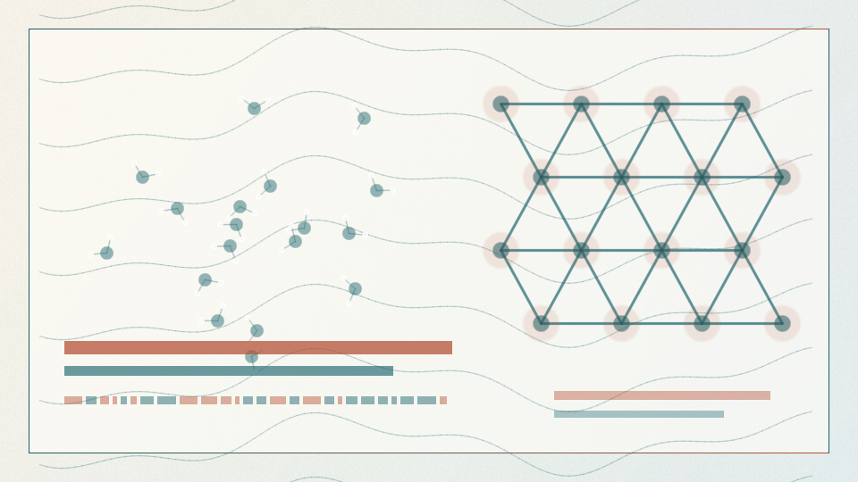

Hydration Free Energies of Alkali Metal and Halide Ions from Data-Driven Many-Body Potentials
Abstract summary: This work evaluates hydration free energies of alkali-metal and halide ions in MB-pol water using staged alchemical transformations and data-driven many-body ion potentials. The calculations test ion-water interactions, electrostatics, polarization, and nuclear quantum effects against experimental trends.
Open paper site